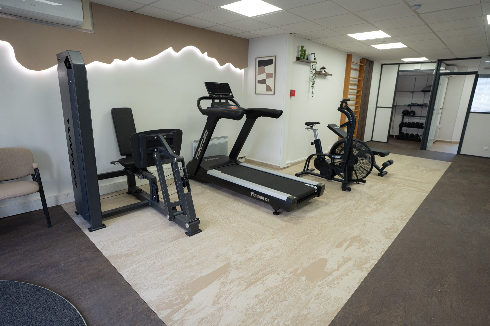

Kinésithérapie du sport& Rééducation active
Un plateau technique complet pour des soins qui dépassent la simple table de massage. À Boulogne-Billancourt, le cabinet Viluma vous accompagne vers un retour à l'effort complet et durable.
Prendre rendez-vousLa rééducation active, c'est quoi ?
Contrairement à la kinésithérapie passive (massage, électrothérapie), la rééducation active vous implique directement dans votre guérison. Vous travaillez, vous progressez, vous reprenez confiance en votre corps.
- Renforcement musculaire ciblé sur les zones blessées
- Travail cardiovasculaire adapté à votre pathologie
- Rééducation proprioceptive et de l'équilibre
- Plateau technique avec tapis, vélos, machines de musculation médicale
- Progression mesurée et objectifs clairs à chaque séance

Sportifs, actifs et patients en rééducation
Que vous soyez sportif amateur, professionnel, ou simplement quelqu'un souhaitant retrouver sa mobilité, notre plateau technique est adapté à votre niveau et à votre pathologie.
Un plateau technique unique à Boulogne-Billancourt
Le cabinet Viluma dispose d'un espace de rééducation active équipé en matériel professionnel, rare dans les cabinets libéraux. Chaque séance se déroule en box privatif avec accès direct au plateau.